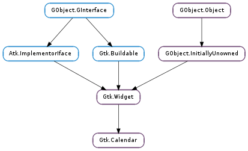

| static | new() |
| clear_marks() | |
| get_date() | |
| get_day_is_marked(day) | |
| get_detail_height_rows() | |
| get_detail_width_chars() | |
| get_display_options() | |
| mark_day(day) | |
| select_day(day) | |
| select_month(month, year) | |
| set_detail_func(func, *data) | |
| set_detail_height_rows(rows) | |
| set_detail_width_chars(chars) | |
| set_display_options(flags) | |
| unmark_day(day) |
| Name | Type | Flags | Description |
|---|---|---|---|
| day | int | r/w | The selected day (as a number between 1 and 31, or 0 to unselect the currently selected day) |
| detail-height-rows | int | r/w | Details height in rows |
| detail-width-chars | int | r/w | Details width in characters |
| month | int | r/w | The selected month (as a number between 0 and 11) |
| no-month-change | bool | r/w | If True, the selected month cannot be changed |
| show-day-names | bool | r/w | If True, day names are displayed |
| show-details | bool | r/w | If True, details are shown |
| show-heading | bool | r/w | If True, a heading is displayed |
| show-week-numbers | bool | r/w | If True, week numbers are displayed |
| year | int | r/w | The selected year |
| Name | Parameters | Return | Description |
|---|---|---|---|
| day-selected | Emitted when the user selects a day. | ||
| day-selected-double-click | Emitted when the user double-clicks a day. | ||
| month-changed | Emitted when the user clicks a button to change the selected month on a calendar. | ||
| next-month | Emitted when the user switched to the next month. | ||
| next-year | Emitted when user switched to the next year. | ||
| prev-month | Emitted when the user switched to the previous month. | ||
| prev-year | Emitted when user switched to the previous year. |
| Name | Type | Access |
|---|---|---|
| widget | Gtk.Widget | r |
Bases: Gtk.Widget
Gtk.Calendar is a widget that displays a Gregorian calendar, one month at a time. It can be created with Gtk.Calendar.new ().
The month and year currently displayed can be altered with Gtk.Calendar.select_month (). The exact day can be selected from the displayed month using Gtk.Calendar.select_day ().
To place a visual marker on a particular day, use Gtk.Calendar.mark_day () and to remove the marker, Gtk.Calendar.unmark_day (). Alternative, all marks can be cleared with Gtk.Calendar.clear_marks ().
The way in which the calendar itself is displayed can be altered using Gtk.Calendar.set_display_options ().
The selected date can be retrieved from a Gtk.Calendar using Gtk.Calendar.get_date ().
Users should be aware that, although the Gregorian calendar is the legal calendar in most countries, it was adopted progressively between 1582 and 1929. xlib.Display before these dates is likely to be historically incorrect.
| Returns: | a newly Gtk.Calendar widget |
|---|---|
| Return type: | Gtk.Widget |
Creates a new calendar, with the current date being selected.
Remove all visual markers.
| Return type: | year: int, month: int, day: int |
|---|
Obtains the selected date from a Gtk.Calendar.
| Parameters: | day (int) – the day number between 1 and 31. |
|---|---|
| Returns: | whether the day is marked. |
| Return type: | bool |
Returns if the day of the calendar is already marked.
| Returns: | The height of detail cells, in rows. |
|---|---|
| Return type: | int |
Queries the height of detail cells, in rows. See Gtk.Calendar :detail-width-chars.
| Returns: | The width of detail cells, in characters. |
|---|---|
| Return type: | int |
Queries the width of detail cells, in characters. See Gtk.Calendar :detail-width-chars.
| Returns: | the display options. |
|---|---|
| Return type: | Gtk.CalendarDisplayOptions |
Returns the current display options of calendar.
| Parameters: | day (int) – the day number to mark between 1 and 31. |
|---|
Places a visual marker on a particular day.
| Parameters: | day (int) – the day number between 1 and 31, or 0 to unselect the currently selected day. |
|---|
Selects a day from the current month.
| Parameters: |
|---|
Shifts the calendar to a different month.
| Parameters: |
|
|---|
Installs a function which provides Pango markup with detail information for each day. Examples for such details are holidays or appointments. That information is shown below each day when Gtk.Calendar :show-details is set. A tooltip containing with full detail information is provided, if the entire text should not fit into the details area, or if Gtk.Calendar :show-details is not set.
The size of the details area can be restricted by setting the Gtk.Calendar :detail-width-chars and Gtk.Calendar :detail-height-rows properties.
| Parameters: | rows (int) – detail height in rows. |
|---|
Updates the height of detail cells. See Gtk.Calendar :detail-height-rows.
| Parameters: | chars (int) – detail width in characters. |
|---|
Updates the width of detail cells. See Gtk.Calendar :detail-width-chars.
| Parameters: | flags (Gtk.CalendarDisplayOptions) – the display options to set |
|---|
Sets display options (whether to display the heading and the month headings).